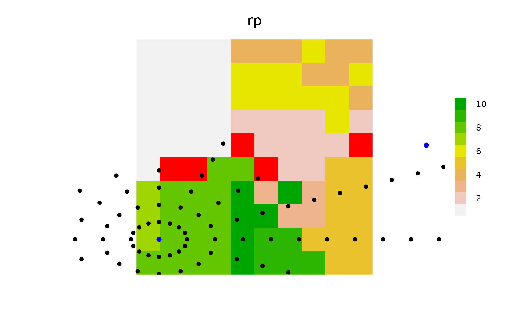

This is a generalized version of a notion of a viewshed. The main difference is that there can be many "viewpoints".
spokes(landscape, coords, loci, maxRadius = ncol(landscape)/4, minRadius = maxRadius, allowOverlap = TRUE, stopRule = NULL, includeBehavior = "includePixels", returnDistances = FALSE, angles = NA_real_, nAngles = NA_real_, returnAngles = FALSE, returnIndices = TRUE, ...) # S4 method for RasterLayer,SpatialPoints,missing spokes(landscape, coords, loci, maxRadius = ncol(landscape)/4, minRadius = maxRadius, allowOverlap = TRUE, stopRule = NULL, includeBehavior = "includePixels", returnDistances = FALSE, angles = NA_real_, nAngles = NA_real_, returnAngles = FALSE, returnIndices = TRUE, ...)
| landscape | Raster on which the circles are built. |
|---|---|
| coords | Either a matrix with 2 (or 3) columns, x and y (and id), representing the
coordinates (and an associated id, like cell index),
or a |
| loci | Numeric. An alternative to |
| maxRadius | Numeric vector of length 1 or same length as coords |
| minRadius | Numeric vector of length 1 or same length as |
| allowOverlap | Logical. Should duplicates across id be removed or kept. Default TRUE. |
| stopRule | A function. If the spokes are to stop. This can be a function
of |
| includeBehavior | Character string. Currently accepts only "includePixels", the default, and "excludePixels". See details. |
| returnDistances | Logical. If TRUE, then a column will be added to the returned
data.table that reports the distance from |
| angles | Numeric. Optional vector of angles, in radians, to use. This will create "spokes" outward from coords. Default is NA, meaning, use internally derived angles that will "fill" the circle. |
| nAngles | Numeric, length one. Alternative to angles. If provided, the function
will create a sequence of angles from |
| returnAngles | Logical. If TRUE, then a column will be added to the returned
data.table that reports the angle from |
| returnIndices | Logical. Should the function return a |
| ... | Objects to be used by |
A matrix containing columns id (representing the row numbers of coords),
angles (from coords to each point along the spokes), x and y coordinates
of each point along the spokes, the corresponding indices on the landscape
Raster, dists (the distances between each coords and each point along the
spokes), and stop, indicating if it was a point that caused a spoke to stop
going outwards due to stopRule.
library(sp) library(raster) library(quickPlot) set.seed(1234) ras <- raster(extent(0, 10, 0, 10), res = 1, val = 0) rp <- randomPolygons(ras, numTypes = 10) clearPlot()Plot(rp)angles <- seq(0, pi * 2, length.out = 17) angles <- angles[-length(angles)] n <- 2 loci <- sample(ncell(rp), n) coords <- SpatialPoints(xyFromCell(rp, loci)) stopRule <- function(landscape) landscape < 3 d2 <- spokes(rp, coords = coords, stopRule = stopRule, minRadius = 0, maxRadius = 50, returnAngles = TRUE, returnDistances = TRUE, allowOverlap = TRUE, angles = angles, returnIndices = TRUE) # Assign values to the "patches" that were in the viewshed of a ray rasB <- raster(ras) rasB[] <- 0 rasB[d2[d2[, "stop"] == 1, "indices"]] <- 1 Plot(rasB, addTo = "rp", zero.color = "transparent", cols = "red")if (NROW(d2) > 0) { sp1 <- SpatialPoints(d2[, c("x", "y")]) Plot(sp1, addTo = "rp", pch = 19, size = 5, speedup = 0.1) }